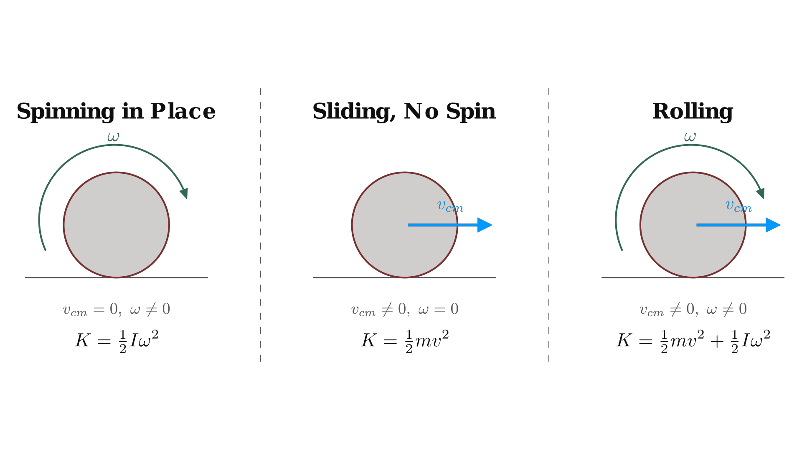
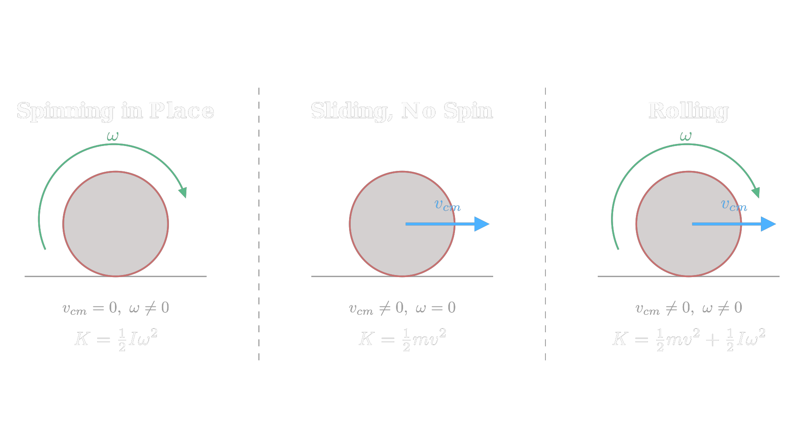
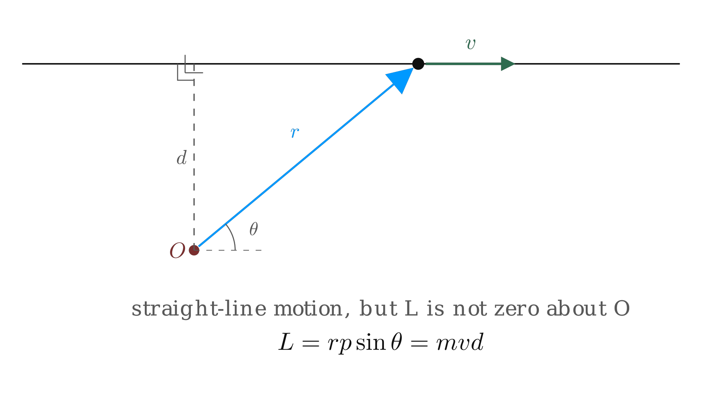
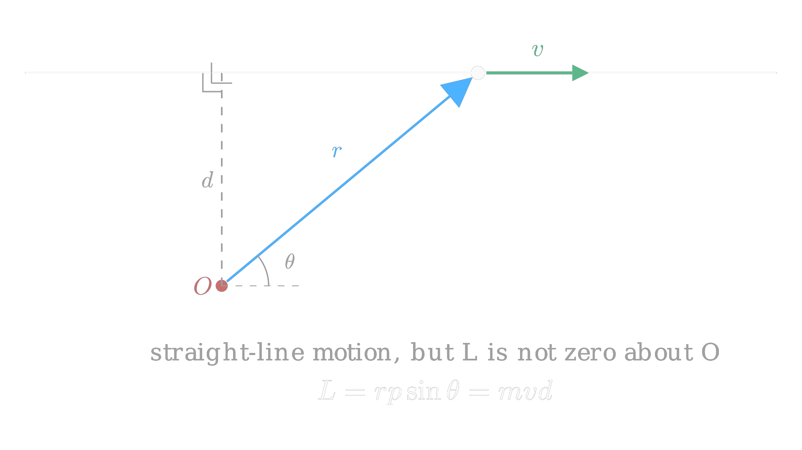
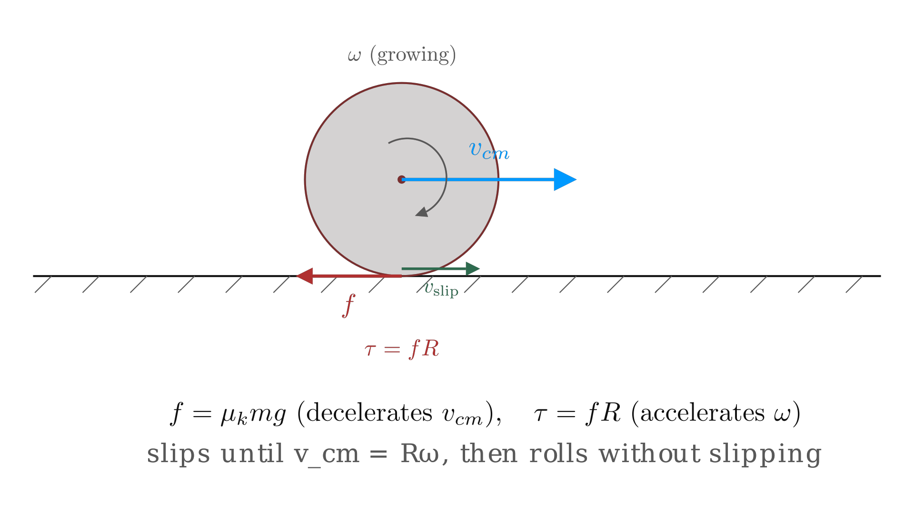
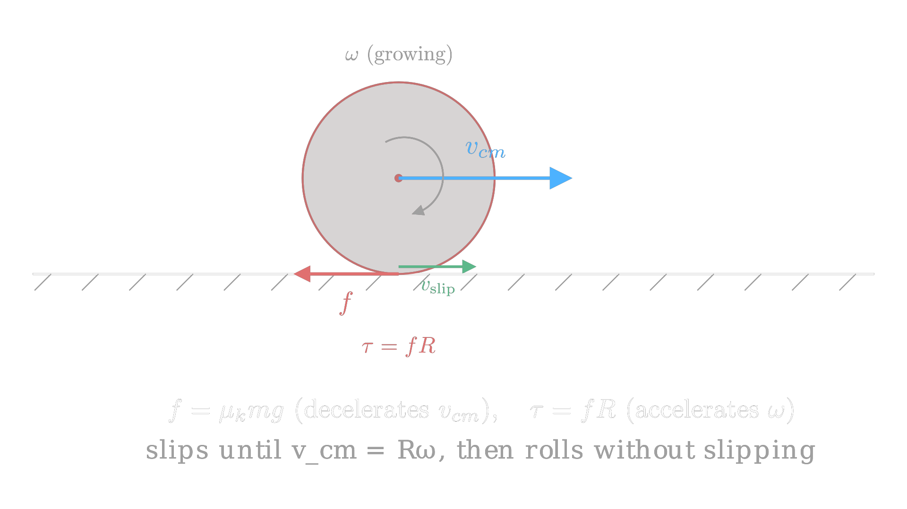
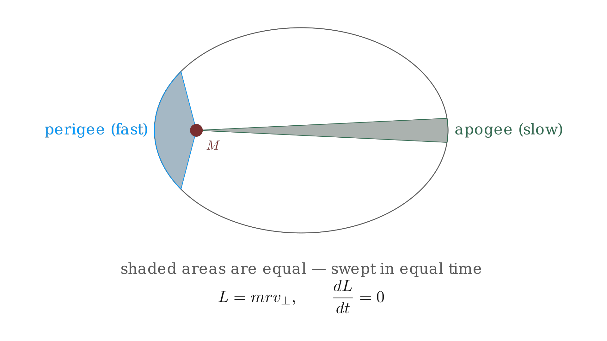
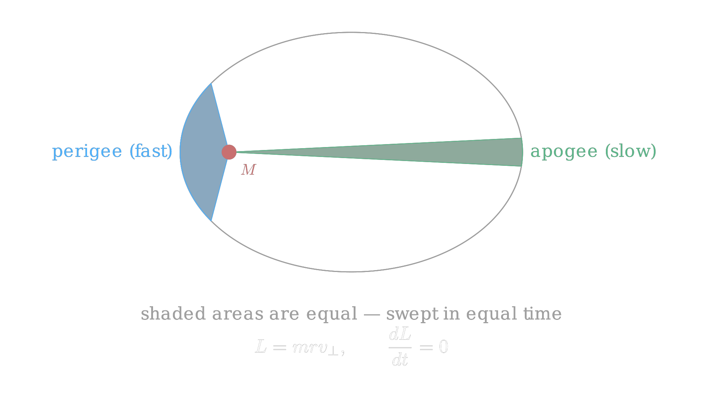
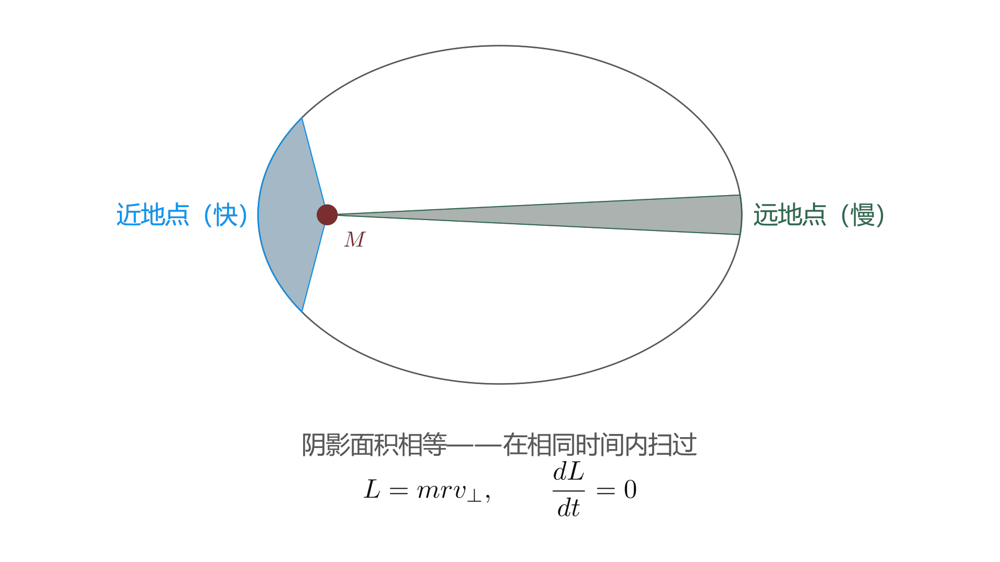
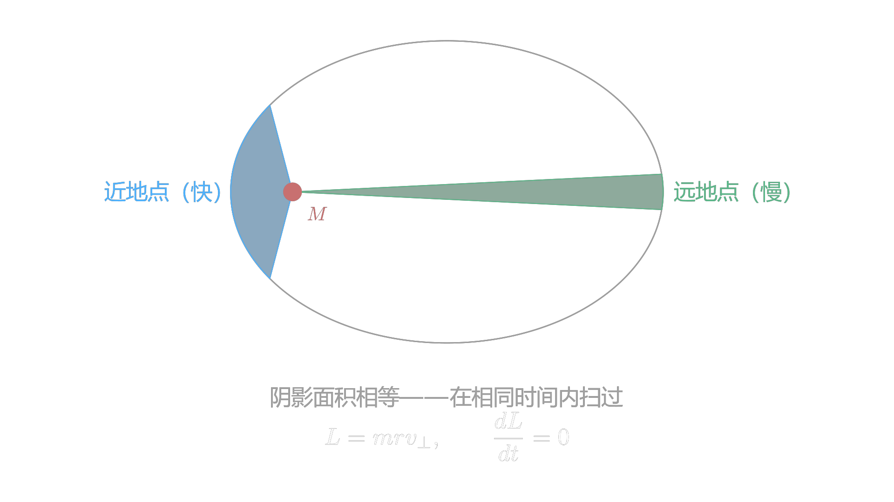

Unit 6: Energy & Momentum of Rotating Systems第 6 单元：转动系统的能量与动量
Rotational kinetic energy, work and power by torque (including torques that vary, handled with calculus), angular momentum and impulse, conservation laws, rolling motion, and orbital mechanics.转动动能、力矩做功与功率（包括用微积分处理变化的力矩）、角动量（angular momentum）与角冲量、各类守恒律、滚动运动以及轨道力学。
Rotational kinetic energy, work and power by torque, angular momentum and angular impulse with average torques and graphs, conservation laws, rolling motion, and orbital mechanics.转动动能、力矩做功与功率、借助平均力矩和图像理解角动量（angular momentum）与角冲量、各类守恒律、滚动运动以及轨道力学。
Rotational Kinetic Energy转动动能
- Calculate the rotational kinetic energy of a rigid body from $K_\text{rot} = \tfrac{1}{2}I\omega^2$, converting rpm or rev/s to rad/s first.
- Explain why a spinning object with a stationary center of mass still has kinetic energy.
- Calculate the total kinetic energy of an object that both translates and rotates as $\tfrac{1}{2}mv_\text{cm}^2 + \tfrac{1}{2}I_\text{cm}\omega^2$.
- Compare the kinetic energies of objects with different rotational inertias at the same angular speed.
- Deduce what fraction of a rolling object's kinetic energy is rotational from its shape factor $I/(mr^2)$.
- 由 $K_\text{rot} = \tfrac{1}{2}I\omega^2$ 计算（
calculate）刚体的转动动能，先把 rpm 或 rev/s 换算为 rad/s。 - 解释（
explain）为什么质心静止的旋转物体仍然具有动能。 - 把既平动又转动的物体的总动能计算（
calculate）为 $\tfrac{1}{2}mv_\text{cm}^2 + \tfrac{1}{2}I_\text{cm}\omega^2$。 - 比较（
compare）角速度相同、转动惯量不同的物体的动能。 - 由形状因子 $I/(mr^2)$ 推断（
deduce）滚动物体的动能中转动部分所占的比例。
In Unit 3 you learned that an object in translational motion carries kinetic energy $K = \frac{1}{2}mv^2$. A spinning object carries energy too, even if its center of mass is stationary: think of a merry-go-round bolted to the ground. The rotational kinetic energy depends on the rotational inertia $I$ and the angular velocity $\omega$, in a formula that perfectly mirrors the translational version.
Unit 3 已经讲过平动物体的动能 $K = \frac{1}{2}mv^2$。一个旋转着的物体同样具有能量，即便质心静止也是如此：想想固定在地面的旋转木马。转动动能（rotational kinetic energy）取决于转动惯量 $I$ 与角速度 $\omega$，其形式与平动版本完全对应。
Why does this work? Every tiny mass element $dm$ on a rigid body at distance $r$ from the axis has tangential speed $v = r\omega$, so its kinetic energy is $\frac{1}{2}(dm)(r\omega)^2$. Summing (integrating) over the entire body gives $\frac{1}{2}\omega^2 \int r^2\,dm = \frac{1}{2}I\omega^2$. This derivation shows that rotational KE is really just the translational KE of all the constituent particles viewed collectively.
为什么这个公式成立？刚体上离轴 $r$ 处的每一个微小质量元 $dm$ 切向速率为 $v = r\omega$，其动能为 $\frac{1}{2}(dm)(r\omega)^2$。对整个刚体求和（积分）得 $\frac{1}{2}\omega^2 \int r^2\,dm = \frac{1}{2}I\omega^2$。这一推导表明：所谓"转动动能"，本质上就是把构成刚体的所有质点的平动动能整体加起来。
Why does this work? Treat the rigid body as many small particles. A particle of mass $m_i$ at distance $r_i$ from the axis moves in a circle with speed $v_i = r_i\omega$, so its kinetic energy is $\frac{1}{2}m_i(r_i\omega)^2$. Every particle shares the same $\omega$, so adding them all gives $\frac{1}{2}\left(\sum m_i r_i^2\right)\omega^2 = \frac{1}{2}I\omega^2$, because $I = \sum m_i r_i^2$. Rotational KE is just the translational KE of all the particles added together.
为什么这个公式成立？把刚体看成许多小质点。离轴 $r_i$ 处、质量为 $m_i$ 的质点做圆周运动，速率 $v_i = r_i\omega$，动能为 $\frac{1}{2}m_i(r_i\omega)^2$。所有质点的 $\omega$ 都相同，把它们全部相加得 $\frac{1}{2}\left(\sum m_i r_i^2\right)\omega^2 = \frac{1}{2}I\omega^2$，因为 $I = \sum m_i r_i^2$。转动动能就是所有质点平动动能之和。
Total Kinetic Energy总动能


When a rigid body both translates and rotates (like a bowling ball rolling down a lane), its total kinetic energy is the sum of two independent contributions:
当刚体既平动又转动时（比如保龄球沿球道滚动），其总动能等于两部分之和：
Worked Example: Flywheel Energy例题：飞轮的储能
A solid disk flywheel has $M = 20\;\text{kg}$, $R = 0.30\;\text{m}$, and spins at $\omega = 150\;\text{rad/s}$. How much rotational kinetic energy does it store?
实心圆盘飞轮（flywheel）$M = 20\;\text{kg}$、$R = 0.30\;\text{m}$，以 $\omega = 150\;\text{rad/s}$ 旋转。储存的转动动能是多少？
Worked Example: Total KE of a Rolling Ball例题：滚动球的总动能
A solid sphere ($M = 4.0\;\text{kg}$, $R = 0.10\;\text{m}$, $I = \tfrac{2}{5}MR^2$) rolls without slipping at $v_{\text{cm}} = 6.0\;\text{m/s}$. Find its total kinetic energy, and what fraction of it is rotational.
一个实心球（$M = 4.0\;\text{kg}$，$R = 0.10\;\text{m}$，$I = \tfrac{2}{5}MR^2$）以 $v_{\text{cm}} = 6.0\;\text{m/s}$ 无滑动滚动。求其总动能，以及转动部分所占的比例。
$K_\text{rot} = \tfrac{1}{2}I\omega^2$ needs $\omega$ in rad/s: convert first (1 rev = $2\pi$ rad, so 1 rpm = $2\pi/60$ rad/s). For anything that rolls, write both terms, $\tfrac{1}{2}mv_\text{cm}^2 + \tfrac{1}{2}I_\text{cm}\omega^2$, and then link them with $v_\text{cm} = r\omega$. When a question compares two objects, write the ratio in symbols (for example $K_B/K_A = I_B/I_A$ at equal $\omega$) before putting in numbers; it is quicker and shows the reasoning.
$K_\text{rot} = \tfrac{1}{2}I\omega^2$ 要求 $\omega$ 以 rad/s 为单位：先换算（1 圈 = $2\pi$ rad，所以 1 rpm = $2\pi/60$ rad/s）。凡是滚动的物体，都要写出两项 $\tfrac{1}{2}mv_\text{cm}^2 + \tfrac{1}{2}I_\text{cm}\omega^2$，再用 $v_\text{cm} = r\omega$ 把两者联系起来。题目比较两个物体时，先用字母写出比值（例如 $\omega$ 相同时 $K_B/K_A = I_B/I_A$），再代入数字；这样更快，也能展示推理过程。
1. A wheel with $I = 0.50\;\text{kg}\cdot\text{m}^2$ spins at 120 rpm. Find its rotational kinetic energy.1. 转动惯量 $I = 0.50\;\text{kg}\cdot\text{m}^2$ 的轮子以 120 rpm 旋转。求它的转动动能。
$\omega = 120 \times \dfrac{2\pi}{60} = 4\pi \approx 12.6$ rad/s. $K_\text{rot} = \tfrac{1}{2}(0.50)(4\pi)^2 = 4\pi^2 \approx 39$ J.
$\omega = 120 \times \dfrac{2\pi}{60} = 4\pi \approx 12.6$ rad/s。$K_\text{rot} = \tfrac{1}{2}(0.50)(4\pi)^2 = 4\pi^2 \approx 39$ J。
2. A thin hoop and a solid disk have the same mass and radius and spin about their central axes at the same angular speed. Which has more kinetic energy, and by what factor?2. 一个细圆环和一个实心圆盘质量、半径都相同，以相同角速度绕各自的中心轴旋转。哪个动能更大？大几倍？
$I_\text{hoop} = MR^2$ and $I_\text{disk} = \tfrac{1}{2}MR^2$. At the same $\omega$, $K \propto I$, so the hoop has twice the kinetic energy of the disk. All of the hoop's mass sits at the rim, where the speed is greatest.
$I_\text{hoop} = MR^2$，$I_\text{disk} = \tfrac{1}{2}MR^2$。$\omega$ 相同时 $K \propto I$，所以圆环的动能是圆盘的 2 倍。圆环的全部质量都在边缘，那里速率最大。
3. A 2.0 kg solid cylinder ($I = \tfrac{1}{2}mr^2$) rolls without slipping at 3.0 m/s. Find its translational, rotational and total kinetic energy.3. 一个 2.0 kg 的实心圆柱（$I = \tfrac{1}{2}mr^2$）以 3.0 m/s 无滑滚动。求它的平动动能、转动动能和总动能。
$K_\text{trans} = \tfrac{1}{2}(2.0)(3.0)^2 = 9.0$ J. With $\omega = v/r$: $K_\text{rot} = \tfrac{1}{2}\left(\tfrac{1}{2}mr^2\right)\left(\tfrac{v}{r}\right)^2 = \tfrac{1}{4}mv^2 = 4.5$ J. Total $= 13.5$ J; the radius cancels, so it is not needed.
$K_\text{trans} = \tfrac{1}{2}(2.0)(3.0)^2 = 9.0$ J。由 $\omega = v/r$：$K_\text{rot} = \tfrac{1}{2}\left(\tfrac{1}{2}mr^2\right)\left(\tfrac{v}{r}\right)^2 = \tfrac{1}{4}mv^2 = 4.5$ J。总动能 $= 13.5$ J；半径被约掉，所以不需要知道它。
Torque and Work力矩与功
- Calculate the work done by a constant torque from $W = \tau\,\Delta\theta$, with $\Delta\theta$ in radians.
- Determine the work done by a varying torque as the area under a $\tau$-versus-$\theta$ graph.
- Calculate the work done by a torque given as a function $\tau(\theta)$ by integration.
- Apply the rotational work-energy theorem, $W_\text{net} = \Delta K_\text{rot}$, to find a final angular speed or a stopping angle.
- Calculate the power delivered by a torque from $P = \tau\omega$.
- Explain why a torque on an object that does not rotate does no work.
- 由 $W = \tau\,\Delta\theta$ 计算（
calculate）恒力矩做的功，$\Delta\theta$ 用弧度。 - 把变力矩做的功确定（
determine）为 $\tau$-$\theta$ 图线下方的面积。 - 用积分计算以函数 $\tau(\theta)$ 给出的力矩所做的功。
- 应用（
apply）转动形式的动能定理 $W_\text{net} = \Delta K_\text{rot}$，求末角速度或停止前转过的角度。 - 由 $P = \tau\omega$ 计算（
calculate）力矩输出的功率。 - 解释（
explain）为什么作用在不转动物体上的力矩不做功。
In translational mechanics, work is done when a force displaces an object: $W = \int F\,dx$. The rotational analog replaces force with torque and linear displacement with angular displacement. A torque that rotates a body through some angle transfers energy into or out of the system.
在平动力学中，力使物体发生位移就做了功：$W = \int F\,dx$。转动版本只需把"力"换成"力矩"、"位移"换成"角位移"：力矩转过某个角度时，能量便流入或流出系统。
For constant torque: $W = \tau\,\Delta\theta$
恒力矩时：$W = \tau\,\Delta\theta$
In translational mechanics, a constant force does work $W = F\,d$ when it pushes an object a distance $d$ along the force, and a varying force does work equal to the area under the $F$-versus-$x$ graph. The rotational analog replaces force with torque and linear displacement with angular displacement. A torque that rotates a body through some angle transfers energy into or out of the system.
在平动力学中，恒力沿力的方向把物体推动距离 $d$ 时做功 $W = F\,d$；变力做的功等于 $F$-$x$ 图线下方的面积。转动版本只需把"力"换成"力矩"、"位移"换成"角位移"：力矩转过某个角度时，能量便流入或流出系统。
For a constant torque. If the torque varies, $W$ is the area under the $\tau$-versus-$\theta$ graph.
适用于恒力矩。若力矩变化，$W$ 等于 $\tau$-$\theta$ 图线下方的面积。
This is the work-energy theorem in rotational form: the net work done by all torques on a rigid body equals the change in its rotational kinetic energy. Graphically, the work equals the area under a $\tau$-vs-$\theta$ curve, just as translational work equals the area under an $F$-vs-$x$ curve.
这就是动能定理（work–energy theorem）的转动形式：作用在刚体上所有力矩做的净功等于其转动动能的变化。在图像上，功等于 $\tau$–$\theta$ 曲线下方的面积，与平动情形 $F$–$x$ 曲线下面积完全类比。
Rotational Power转动功率
The instantaneous power delivered by a torque follows the same pattern as translational power ($P = Fv$):
力矩输出的瞬时功率遵循与平动功率（$P = Fv$）完全相同的形式：
| Translational平动 | Rotational转动 |
|---|---|
| $W = \int F\,dx$ | $W = \int \tau\,d\theta$ |
| $W$ = area under $F$-$x$ graph$W$ = $F$-$x$ 图线下面积 | $W$ = area under $\tau$-$\theta$ graph$W$ = $\tau$-$\theta$ 图线下面积 |
| $W = F\Delta x$ (constant $F$)（恒 $F$） | $W = \tau\Delta\theta$ (constant $\tau$)（恒 $\tau$） |
| $P = Fv$ | $P = \tau\omega$ |
| $W_{\text{net}} = \Delta K_{\text{trans}}$ | $W_{\text{net}} = \Delta K_{\text{rot}}$ |
Worked Example: Work to Spin Up a Wheel例题：将轮子转起来所做的功
A constant torque of τ = 8.0 N·m is applied to a wheel
initially at rest. How much work after 5.0 revolutions?
对一个初始静止的轮施加恒定力矩 τ = 8.0 N·m。
转 5.0 圈后做了多少功？
Worked Example: Power Delivered by a Drill例题：电钻输出的功率
An electric drill exerts a constant torque of 2.5 N·m on a bit turning at a steady 1800 rpm. Find (a) the power delivered to the bit and (b) the energy delivered in 10 s.
电钻对钻头施加 2.5 N·m 的恒定力矩，钻头以 1800 rpm 匀速转动。求 (a) 输出给钻头的功率；(b) 10 s 内输出的能量。
Worked Example: Work Done by a Torque That Grows with Angle例题：随角度增大的力矩所做的功 Physics C
A wheel with $I = 0.50\;\text{kg}\cdot\text{m}^2$ starts from rest. A torque $\tau(\theta) = 4.0\,\theta$ (N·m, $\theta$ in rad) turns it from $\theta = 0$ to $\theta = 3.0$ rad. Find the work done and the final angular speed.
转动惯量 $I = 0.50\;\text{kg}\cdot\text{m}^2$ 的轮子从静止开始。力矩 $\tau(\theta) = 4.0\,\theta$（单位 N·m，$\theta$ 的单位为 rad）使它从 $\theta = 0$ 转到 $\theta = 3.0$ rad。求所做的功和末角速度。
Angles in $W = \tau\,\Delta\theta$ and speeds in $P = \tau\omega$ must be in radians: revolutions times $2\pi$, rpm times $2\pi/60$. A braking torque acts against the rotation, so its work is negative; write $W = -\tau\,\Delta\theta$ and set it equal to $K_f - K_i$. When the question gives a torque that changes with angle, look for a $\tau$-$\theta$ graph and find the area, splitting it into rectangles and triangles.
$W = \tau\,\Delta\theta$ 中的角度和 $P = \tau\omega$ 中的角速度都必须用弧度：圈数乘以 $2\pi$，rpm 乘以 $2\pi/60$。制动力矩与转动方向相反，所做的功为负；写成 $W = -\tau\,\Delta\theta$，再令它等于 $K_f - K_i$。题目给出随角度变化的力矩时，找 $\tau$-$\theta$ 图并求面积，把面积分成矩形和三角形。
When the torque is given as a function $\tau(\theta)$, write $W = \int_{\theta_1}^{\theta_2} \tau\,d\theta$ with the limits shown before evaluating. A torque given as a function of time must first be related to angle, or handled with $P = \tau\omega$ and $W = \int P\,dt$.
力矩以函数 $\tau(\theta)$ 给出时，先写出带上下限的 $W = \int_{\theta_1}^{\theta_2} \tau\,d\theta$ 再计算。力矩以时间函数给出时，要先把它与角度联系起来，或者用 $P = \tau\omega$ 和 $W = \int P\,dt$ 处理。
1. A flywheel with $I = 2.0\;\text{kg}\cdot\text{m}^2$ spins at 10 rad/s. A constant braking torque of 5.0 N·m stops it. Through what angle does it turn while stopping?1. 转动惯量 $I = 2.0\;\text{kg}\cdot\text{m}^2$ 的飞轮以 10 rad/s 旋转。5.0 N·m 的恒定制动力矩使它停下。停下之前它转过多大角度？
$K_i = \tfrac{1}{2}(2.0)(10)^2 = 100$ J and $K_f = 0$. The braking work is $-\tau\,\Delta\theta = -100$ J, so $\Delta\theta = 100/5.0 = 20$ rad, about 3.2 revolutions.
$K_i = \tfrac{1}{2}(2.0)(10)^2 = 100$ J，$K_f = 0$。制动力矩做功 $-\tau\,\Delta\theta = -100$ J，所以 $\Delta\theta = 100/5.0 = 20$ rad，约 3.2 圈。
2. A motor delivers a torque of 40 N·m while turning at a steady 3000 rpm. What power does it deliver?2. 电动机以 3000 rpm 匀速转动时输出 40 N·m 的力矩。它输出的功率是多少？
$\omega = 3000 \times \dfrac{2\pi}{60} = 100\pi \approx 314$ rad/s. $P = \tau\omega = (40)(314) \approx 1.3 \times 10^{4}$ W, about 13 kW.
$\omega = 3000 \times \dfrac{2\pi}{60} = 100\pi \approx 314$ rad/s。$P = \tau\omega = (40)(314) \approx 1.3 \times 10^{4}$ W，约 13 kW。
3. You push hard on the handle of a locked door, exerting a large torque about the hinges. Explain how much work your torque does on the door.3. 你用力推一扇锁住的门的把手，对门轴施加了很大的力矩。说明你的力矩对门做了多少功。
None. Work by a torque is $\tau\,\Delta\theta$, and the locked door does not turn, so $\Delta\theta = 0$ and $W = 0$. The door's kinetic energy does not change, which agrees with the work-energy theorem.
不做功。力矩做功为 $\tau\,\Delta\theta$，锁住的门不转动，$\Delta\theta = 0$，所以 $W = 0$。门的动能没有变化，这与动能定理一致。
Angular Momentum & Angular Impulse角动量与角冲量
- Calculate the angular momentum of a rigid body rotating about a fixed axis from $L = I\omega$.
- Calculate the angular momentum of a particle about a chosen point from $L = rmv\sin\theta$, and explain why a particle moving in a straight line can have angular momentum.
- Apply the angular impulse-momentum theorem with an average torque, $\tau_\text{avg}\,\Delta t = \Delta L$.
- Determine angular impulse as the area under a $\tau$-versus-$t$ graph and net torque as the slope of an $L$-versus-$t$ graph.
- Use $\tau_\text{net} = dL/dt$ and integrate a time-dependent torque to find the change in angular momentum.
- 由 $L = I\omega$ 计算（
calculate）绕固定轴转动刚体的角动量。 - 由 $L = rmv\sin\theta$ 计算（
calculate）质点相对所选点的角动量，并解释（explain）沿直线运动的质点为什么可以有角动量。 - 用平均力矩应用（
apply）角动量定理 $\tau_\text{avg}\,\Delta t = \Delta L$。 - 把角冲量确定（
determine）为 $\tau$-$t$ 图线下方的面积，把净力矩确定为 $L$-$t$ 图线的斜率。 - 使用 $\tau_\text{net} = dL/dt$，并对随时间变化的力矩积分求角动量的变化。
Angular momentum is the rotational counterpart of linear momentum. Just as linear momentum $p = mv$ quantifies how hard it is to stop a translating object, angular momentum $L$ quantifies how hard it is to stop a spinning one.
角动量（angular momentum）是动量在转动中的对应量。正如 $p = mv$ 表征"让平动物体停下来有多难"，角动量 $L$ 表征"让旋转物体停下来有多难"。
Angular Momentum of a Rigid Body刚体的角动量
Angular Momentum of a Particle质点的角动量


For a single particle (or an object treated as one), the angular momentum about a chosen reference point is defined through the cross product of its position and momentum vectors:
对于单个质点（或将物体视为质点的情形），相对所选参考点的角动量由位置矢量与动量矢量的矢量积定义：
Magnitude: $L = rp\sin\theta = rmv\sin\theta$
大小：$L = rp\sin\theta = rmv\sin\theta$
Angular Impulse角冲量
Angular impulse is the rotational analog of linear impulse. A torque applied over a time interval delivers angular impulse, which equals the change in angular momentum: the rotational impulse-momentum theorem.
角冲量（angular impulse）是线动量冲量在转动中的对应量。力矩在一段时间内的累积即为角冲量，它等于角动量的变化，这就是角动量定理（rotational impulse–momentum theorem）。
When rotational inertia $I$ is constant, this reduces to a familiar chain: $\tau_{\text{net}} = \frac{dL}{dt} = I\frac{d\omega}{dt} = I\alpha$. The net torque is the slope of the $L$-vs-$t$ graph, and the angular impulse is the area under the $\tau$-vs-$t$ graph.
当转动惯量 $I$ 恒定时，可化为熟悉的链：$\tau_{\text{net}} = \frac{dL}{dt} = I\frac{d\omega}{dt} = I\alpha$。净力矩等于 $L$-$t$ 图的斜率；角冲量等于 $\tau$-$t$ 曲线下方的面积。
For a constant torque, $\tau_\text{avg}$ is just $\tau$. When rotational inertia $I$ is constant, $\Delta L = I\,\Delta\omega$, so $\tau_\text{net} = \frac{\Delta L}{\Delta t} = I\frac{\Delta\omega}{\Delta t} = I\alpha$: Newton's second law for rotation from Unit 5. The net torque is the slope of the $L$-vs-$t$ graph, and the angular impulse is the area under the $\tau$-vs-$t$ graph.
恒力矩时 $\tau_\text{avg}$ 就是 $\tau$。当转动惯量 $I$ 恒定时，$\Delta L = I\,\Delta\omega$，所以 $\tau_\text{net} = \frac{\Delta L}{\Delta t} = I\frac{\Delta\omega}{\Delta t} = I\alpha$，正是第 5 单元的转动形式 Newton 第二定律。净力矩等于 $L$-$t$ 图的斜率；角冲量等于 $\tau$-$t$ 图线下方的面积。
| Translational平动 | Rotational转动 |
|---|---|
| $p = mv$ | $L = I\omega$ |
| $\vec{F}_{\text{net}} = d\vec{p}/dt$ | $\vec{\tau}_{\text{net}} = d\vec{L}/dt$ |
| $J = \int F\,dt = \Delta p$ | $\int \tau\,dt = \Delta L$ |
| $F_{\text{net}} = \Delta p/\Delta t$ | $\tau_{\text{net}} = \Delta L/\Delta t$ |
| $J = F_\text{avg}\,\Delta t = \Delta p$ | $\tau_\text{avg}\,\Delta t = \Delta L$ |
Worked Example: Angular Momentum of a Particle例题：质点的角动量
A 0.50 kg ball travels at 4.0 m/s in a straight line. Find its angular momentum about a point 3.0 m perpendicular to its path.
0.50 kg 的球以 4.0 m/s 沿直线运动。求其相对距运动路径 3.0 m（垂直距离）的一个点的角动量。
Worked Example: Angular Impulse from an Average Torque例题：由平均力矩求角冲量
A playground merry-go-round with $I = 250\;\text{kg}\cdot\text{m}^2$ is at rest. A child pushes tangentially on its rim, 1.5 m from the axle, with an average force of 100 N for 3.0 s. Ignore friction at the axle. Find (a) the angular impulse and (b) the final angular speed.
游乐场旋转木马的转动惯量 $I = 250\;\text{kg}\cdot\text{m}^2$，初始静止。一个孩子在距转轴 1.5 m 的边缘沿切向推它，平均推力 100 N，持续 3.0 s。忽略转轴处的摩擦。求 (a) 角冲量；(b) 末角速度。
Worked Example: Time-Dependent Torque, τ = dL/dt (FRQ-style)例题：随时间变化的力矩，τ = dL/dt（FRQ 风格） Physics C
A flywheel with rotational inertia $I = 4.0\;\text{kg}\cdot\text{m}^2$ is at rest. A net torque $\tau(t) = 6t$ N·m is applied for $t = 0$ to $t = 5.0$ s. (a) Find the angular impulse delivered. (b) Find the flywheel's angular velocity at $t = 5.0$ s. (c) At what time does the instantaneous angular acceleration equal $\alpha = 3.0\;\text{rad/s}^2$?
转动惯量 $I = 4.0\;\text{kg}\cdot\text{m}^2$ 的飞轮初始静止。从 $t = 0$ 到 $t = 5.0$ s 施加净力矩 $\tau(t) = 6t$ N·m。(a) 求传递的角冲量；(b) 求 $t = 5.0$ s 时的角速度；(c) 何时瞬时角加速度恰为 $\alpha = 3.0\;\text{rad/s}^2$？
Takeaway: $\tau = dL/dt$ is the rotational analog of $F = dp/dt$. For constant $I$ you can use $\tau = I\alpha$ at each instant, but for a time-varying torque you find $\Delta L$ by integrating $\tau$ over time (the area under the $\tau$-$t$ graph), not by multiplying the final torque by the elapsed time: here $(30)(5.0) = 150$ would double the true 75 kg·m²/s.
要点：$\tau = dL/dt$ 是 $F = dp/dt$ 的转动形式。$I$ 恒定时可以在每一时刻使用 $\tau = I\alpha$；但力矩随时间变化时，要对时间积分 $\tau$（即 $\tau$-$t$ 图线下方的面积）来求 $\Delta L$，不能用末时刻的力矩乘以经过的时间：本题中 $(30)(5.0) = 150$ 是正确值 75 kg·m²/s 的两倍。
Angular momentum has units of kg·m²/s, which is the same as N·m·s; give one of them with every answer. For a particle, name the point you take angular momentum about and use the perpendicular distance from that point to the line of motion ($r\sin\theta$), not the straight-line distance. Use $L = I\omega$ only for a rigid body turning about a fixed axis. Choose a positive sense of rotation (for example counterclockwise) and keep it for every $L$ and every torque in the problem.
角动量的单位是 kg·m²/s，与 N·m·s 相同；每个答案都要带上其中一个单位。对质点，要说明以哪一点为参考点，并使用该点到运动直线的垂直距离（$r\sin\theta$），而不是直线距离。$L = I\omega$ 只适用于绕固定轴转动的刚体。选定一个正的转动方向（例如逆时针），并在整道题中对每个 $L$ 和每个力矩都保持一致。
When the torque is a function of time, write $\Delta L = \int_{t_1}^{t_2} \tau\,dt$ with limits; when $L(t)$ is given, the net torque at an instant is $dL/dt$ there.
力矩是时间的函数时，写出带上下限的 $\Delta L = \int_{t_1}^{t_2} \tau\,dt$；给出 $L(t)$ 时，某一时刻的净力矩就是该时刻的 $dL/dt$。
If the torque changes during the push, use the area under the $\tau$-$t$ graph, or split the time into intervals of constant torque. $\Delta L/\Delta t$ gives the average net torque over the interval.
如果推动过程中力矩有变化，用 $\tau$-$t$ 图线下方的面积，或把时间分成若干个恒力矩时段。$\Delta L/\Delta t$ 给出的是这段时间内的平均净力矩。
1. A disk with $I = 0.20\;\text{kg}\cdot\text{m}^2$ spins at 15 rad/s. Find its angular momentum.1. 转动惯量 $I = 0.20\;\text{kg}\cdot\text{m}^2$ 的圆盘以 15 rad/s 旋转。求它的角动量。
$L = I\omega = (0.20)(15) = 3.0$ kg·m²/s, in the sense of the rotation.
$L = I\omega = (0.20)(15) = 3.0$ kg·m²/s，方向与转动方向相同。
2. A 2.0 kg puck slides in a straight line at 3.0 m/s. Its path passes 0.40 m from a post (the perpendicular distance). What is its angular momentum about the post, and does it change as the puck slides past?2. 一个 2.0 kg 的冰球以 3.0 m/s 沿直线滑行，其路径与一根立柱的垂直距离为 0.40 m。它相对立柱的角动量是多少？冰球滑过时角动量会变吗？
$L = r_\perp mv = (0.40)(2.0)(3.0) = 2.4$ kg·m²/s. It stays constant: $r\sin\theta$ is always the same 0.40 m perpendicular distance, and no force acts on the puck to change $mv$.
$L = r_\perp mv = (0.40)(2.0)(3.0) = 2.4$ kg·m²/s。它保持不变：$r\sin\theta$ 始终等于 0.40 m 的垂直距离，而且没有力作用在冰球上改变 $mv$。
3. A grinding wheel has angular momentum 60 kg·m²/s. A brake applies a constant torque of 12 N·m opposing the rotation. How long does the wheel take to stop?3. 一个砂轮的角动量为 60 kg·m²/s。制动器施加 12 N·m 的恒定力矩，方向与转动相反。砂轮需要多长时间停下？
$\Delta L = -60$ kg·m²/s and $\tau = -12$ N·m, so $\Delta t = \Delta L/\tau = (-60)/(-12) = 5.0$ s.
$\Delta L = -60$ kg·m²/s，$\tau = -12$ N·m，所以 $\Delta t = \Delta L/\tau = (-60)/(-12) = 5.0$ s。
Conservation of Angular Momentum角动量守恒
- State the condition for the angular momentum of a system to be conserved: zero net external torque.
- Explain why a spinning skater speeds up when she pulls her arms in, and why her kinetic energy increases.
- Apply $I_i\omega_i = I_f\omega_f$ to a system whose rotational inertia changes.
- Calculate the final angular speed after a rotational collision, such as a disk dropped onto a disk or a ball caught on a turntable.
- Calculate the kinetic energy before and after an angular-momentum-conserving event and decide whether energy was converted to other forms.
- 说出（
state）系统角动量守恒的条件：合外力矩为零。 - 解释（
explain）为什么花滑运动员收拢双臂时转得更快，以及她的动能为什么增大。 - 对转动惯量发生变化的系统应用（
apply）$I_i\omega_i = I_f\omega_f$。 - 计算（
calculate）转动碰撞后的末角速度，例如圆盘落到另一圆盘上，或在转盘上接住一个球。 - 计算（
calculate）角动量守恒过程前后的动能，并判断是否有能量转化为其他形式。
Conservation of angular momentum is one of the most profound and widely applied principles in physics. It governs everything from figure skating spins to the collapse of interstellar gas clouds into stars.
角动量守恒（conservation of angular momentum）是物理学最深刻且应用最广泛的原理之一。它支配着从花样滑冰的旋转，到星际气体云塌缩成恒星等一切现象。
The total angular momentum of a system is the sum of the angular momenta of all its parts. If no external torque acts on the system, this total remains constant. Internal torques redistribute angular momentum among the parts but cannot change the total, a direct consequence of Newton's third law applied to angular impulse.
系统总角动量等于各部分角动量之和。若系统不受任何外力矩作用，该总量便保持不变。内力矩只能在各部分之间重新分配角动量，无法改变总量。这是 Newton 第三定律推广到角冲量上的直接结果。
Writing "conservation of angular momentum" on its own is an incomplete answer. Name the system, explain why its angular momentum is conserved (the net external torque on that system is zero, for example a frictionless axle or turntable), and then write the before-and-after equation, $I_i\omega_i = I_f\omega_f$, with every term. Do not assume kinetic energy is conserved as well: calculate $K$ before and after and compare.
只写"角动量守恒"是不完整的回答。要说明所选系统，解释（explain）它的角动量为什么守恒（该系统所受的合外力矩为零，例如转轴或转盘无摩擦），再写出包含每一项的前后方程 $I_i\omega_i = I_f\omega_f$。不要默认动能也守恒：分别计算前后的 $K$ 再比较。
Worked Example: Two Disks Collide例题：两圆盘碰撞合并
A spinning disk with $I_1 = 0.40\;\text{kg}\cdot\text{m}^2$ and $\omega_1 = 10\;\text{rad/s}$ is dropped onto a stationary disk with $I_2 = 0.60\;\text{kg}\cdot\text{m}^2$.
一个 $I_1 = 0.40\;\text{kg}\cdot\text{m}^2$、$\omega_1 = 10\;\text{rad/s}$ 的旋转圆盘落到一个 $I_2 = 0.60\;\text{kg}\cdot\text{m}^2$ 的静止圆盘上。
Worked Example: Spinning Platform Catch (FRQ Style)例题：转盘上接球（FRQ 风格）
A person ($I_{\text{person}} = 3.0\;\text{kg}\cdot\text{m}^2$) stands at the center of a frictionless turntable, initially not spinning. A ball ($m = 0.50\;\text{kg}$) is thrown tangentially at $v = 8.0\;\text{m/s}$ and caught at arm's length $r = 0.80\;\text{m}$. Find (a) the final angular velocity, and (b) whether kinetic energy is conserved.
一个人（$I_{\text{person}} = 3.0\;\text{kg}\cdot\text{m}^2$）站在无摩擦转盘中心，初始不转。沿切向以 $v = 8.0\;\text{m/s}$ 飞来一颗球（$m = 0.50\;\text{kg}$），他在距轴 $r = 0.80\;\text{m}$ 处把球接住。求 (a) 末角速度；(b) 动能是否守恒。
Principle: Conservation of angular momentum (turntable is frictionless → no external torque)
原理：角动量守恒（转盘无摩擦 → 无外力矩）。
System: person + ball + turntable
系统：人 + 球 + 转盘。
Before catch: Ball has $L_i = rmv$ about the turntable axis. Person has $L = 0$.
接球前：球相对转盘轴的角动量 $L_i = rmv$，人 $L = 0$。
After catch: Ball (at distance $r$) and person rotate together. $I_f = I_{\text{person}} + mr^2$.
接球后：球（距轴 $r$）与人一起旋转，$I_f = I_{\text{person}} + mr^2$。
1. A skater with $I = 4.0\;\text{kg}\cdot\text{m}^2$ spins at 2.0 rad/s and pulls her arms in until $I = 1.6\;\text{kg}\cdot\text{m}^2$. Find her new angular speed and her kinetic energy before and after. Where does the extra energy come from?1. 一名花滑运动员 $I = 4.0\;\text{kg}\cdot\text{m}^2$，以 2.0 rad/s 旋转，收拢双臂后 $I = 1.6\;\text{kg}\cdot\text{m}^2$。求她的新角速度以及前后的动能。多出来的能量从哪里来？
$\omega_f = (4.0)(2.0)/1.6 = 5.0$ rad/s. $K_i = \tfrac{1}{2}(4.0)(2.0)^2 = 8.0$ J and $K_f = \tfrac{1}{2}(1.6)(5.0)^2 = 20$ J. The extra 12 J is work done by her muscles pulling her arms inward, converted from chemical energy in her body.
$\omega_f = (4.0)(2.0)/1.6 = 5.0$ rad/s。$K_i = \tfrac{1}{2}(4.0)(2.0)^2 = 8.0$ J，$K_f = \tfrac{1}{2}(1.6)(5.0)^2 = 20$ J。多出的 12 J 来自她的肌肉把双臂向内拉时所做的功，由体内的化学能转化而来。
2. A uniform rod (mass 1.2 kg, length 0.80 m) lies at rest on a frictionless table, pivoted at its center. A 0.10 kg lump of clay moving at 4.0 m/s perpendicular to the rod hits one end and sticks. Find the angular speed just after the collision. ($I_\text{rod} = \tfrac{1}{12}ML^2$ about the center.)2. 一根均匀细杆（质量 1.2 kg，长 0.80 m）静止在无摩擦桌面上，绕其中心的转轴转动。一块 0.10 kg 的橡皮泥以 4.0 m/s 垂直于杆运动，击中杆的一端并粘住。求碰撞后瞬间的角速度。（杆绕中心 $I_\text{rod} = \tfrac{1}{12}ML^2$。）
System: rod + clay; the pivot's force passes through the axis, so it exerts no torque and $L$ about the pivot is conserved. Before: $L = r_\perp mv = (0.40)(0.10)(4.0) = 0.16$ kg·m²/s. After: $I_f = \tfrac{1}{12}(1.2)(0.80)^2 + (0.10)(0.40)^2 = 0.064 + 0.016 = 0.080$ kg·m². $\omega_f = 0.16/0.080 = 2.0$ rad/s. (Kinetic energy falls from 0.80 J to 0.16 J: an inelastic collision.)
系统：杆 + 橡皮泥；转轴的力通过转轴，不产生力矩，所以相对转轴的 $L$ 守恒。碰前：$L = r_\perp mv = (0.40)(0.10)(4.0) = 0.16$ kg·m²/s。碰后：$I_f = \tfrac{1}{12}(1.2)(0.80)^2 + (0.10)(0.40)^2 = 0.064 + 0.016 = 0.080$ kg·m²。$\omega_f = 0.16/0.080 = 2.0$ rad/s。（动能从 0.80 J 降到 0.16 J：非弹性碰撞。）
3. A disk spins freely at angular speed $\omega$ on a frictionless axle. An identical disk that is not spinning is dropped onto it and the two stick. What fraction of the original kinetic energy remains?3. 一个圆盘在无摩擦转轴上以角速度 $\omega$ 自由旋转。一个完全相同但不转的圆盘落在它上面，两者粘在一起。原来的动能还剩多少比例？
$L$ is conserved: $I\omega = (2I)\omega_f$, so $\omega_f = \omega/2$. $K_f = \tfrac{1}{2}(2I)(\omega/2)^2 = \tfrac{1}{4}I\omega^2$, which is half of $K_i = \tfrac{1}{2}I\omega^2$. Half the kinetic energy remains; the other half becomes thermal energy as the surfaces rub before they lock together.
$L$ 守恒：$I\omega = (2I)\omega_f$，所以 $\omega_f = \omega/2$。$K_f = \tfrac{1}{2}(2I)(\omega/2)^2 = \tfrac{1}{4}I\omega^2$，是 $K_i = \tfrac{1}{2}I\omega^2$ 的一半。剩下一半动能；另一半在两盘表面相互摩擦、直到同步转动的过程中变成热能。
Rolling滚动
- State the rolling-without-slipping conditions $v_\text{cm} = r\omega$ and $a_\text{cm} = r\alpha$, and explain why the contact point is instantaneously at rest.
- Apply conservation of energy, including both translational and rotational kinetic energy, to find the speed of an object rolling down an incline.
- Rank the speeds of different shapes at the bottom of an incline using the shape factor $I/(mr^2)$.
- Sketch and interpret energy bar charts for a rolling object at different heights.
- Explain why static friction does no work on an object rolling without slipping, while kinetic friction dissipates energy when it slips.
- Calculate the time for a sliding ball to start rolling without slipping.
- 说出（
state）无滑滚动条件 $v_\text{cm} = r\omega$ 与 $a_\text{cm} = r\alpha$，并解释（explain）接触点为什么瞬时静止。 - 应用（
apply）包含平动动能和转动动能的能量守恒，求沿斜面滚下物体的速率。 - 用形状因子 $I/(mr^2)$ 对不同形状物体在斜面底端的速率排序（
rank）。 - 画出（
sketch）并解读（interpret）滚动物体在不同高度的能量条形图。 - 解释（
explain）为什么静摩擦对无滑滚动的物体不做功，而打滑时动摩擦会耗散能量。 - 计算（
calculate）滑动的球开始无滑滚动所需的时间。
Rolling combines translation and rotation into a single motion. A wheel rolling down the road translates forward while simultaneously spinning about its center, so its energy, momentum and dynamics all need both descriptions at once.
滚动把平动和转动合二为一。车轮沿路面滚动时既向前平动、又绕中心旋转，所以描述它的能量、动量与动力学时，两种描述缺一不可。
Rolling Without Slipping无滑滚动
When an object rolls without slipping, there is a strict geometric constraint tying the translational motion of the center of mass to the rotational motion about the center:
当物体做无滑滚动（rolling without slipping，又称纯滚动）时，质心的平动与绕质心的转动之间存在严格的几何约束：
The physical meaning: the contact point between the rolling object and the surface is instantaneously at rest. Because there is no relative sliding at the contact point, static friction acts but does not dissipate energy. The total kinetic energy is:
物理含义：滚动物体与表面的接触点瞬时速度为零。接触点没有相对滑动，所以作用的是静摩擦，不耗散能量。总动能为：
With $v_{\text{cm}} = r\omega$: $K = \frac{1}{2}mv_{\text{cm}}^2\!\left(1 + \frac{I_{\text{cm}}}{mr^2}\right)$
代入 $v_{\text{cm}} = r\omega$：$K = \frac{1}{2}mv_{\text{cm}}^2\!\left(1 + \frac{I_{\text{cm}}}{mr^2}\right)$
Rolling While Slipping边滚边滑


When an object slips, the contact point has nonzero velocity relative to the surface. The rolling constraint ($v_{\text{cm}} = r\omega$) no longer holds, and kinetic friction acts at the contact point, dissipating energy. The translational and rotational equations of motion must be solved independently until slipping ceases and $v_{\text{cm}} = r\omega$ is re-established.
当物体打滑时，接触点相对地面的速度不为零。滚动约束 $v_{\text{cm}} = r\omega$ 不再成立，接触处由动摩擦力作用并耗散能量。此时必须分别求解平动与转动方程，直到打滑停止、$v_{\text{cm}} = r\omega$ 重新建立。
Worked Example: Solid Sphere Rolling Down an Incline例题：实心球沿斜面滚下
A solid sphere of mass m and radius r starts from rest
and rolls without slipping down an incline of height h.
Find its speed at the bottom.
质量 m、半径 r 的实心球从静止释放，
沿高 h 的斜面无滑滚下。
求其底端速率。
Worked Example: Bowling Ball Starts Sliding例题：保龄球起初打滑
A bowling ball with $I = \tfrac{2}{5}mR^2$ is launched with speed $v_0$ and no spin on a surface with kinetic friction $\mu_k$. How long until it rolls without slipping?
质量 $m$、半径 $R$、$I = \tfrac{2}{5}mR^2$ 的保龄球以速率 $v_0$ 抛出，不带旋转，落到动摩擦系数 $\mu_k$ 的地面上。多久后开始无滑滚动？
rolling resistance）。接触点处的摩擦要么是静摩擦（无滑滚动，不耗散能量），要么是动摩擦（边滚边滑，耗散能量）。
In a rolling energy problem, write the energy equation with every term before substituting: $mgh = \tfrac{1}{2}mv^2 + \tfrac{1}{2}I\omega^2$, then replace $\omega$ with $v/r$ and $I$ with the given shape's expression so that $m$ and $r$ cancel. State "rolls without slipping" as the reason you use $v = r\omega$, and "static friction does no work" as the reason mechanical energy is conserved. If a question says the object slides or skids, do not use $v = r\omega$; treat translation and rotation separately with kinetic friction.
做滚动能量题时，代入数字前先写出包含每一项的能量方程：$mgh = \tfrac{1}{2}mv^2 + \tfrac{1}{2}I\omega^2$，再用 $v/r$ 替换 $\omega$、用该形状的表达式替换 $I$，让 $m$ 和 $r$ 约掉。把"无滑滚动"写成使用 $v = r\omega$ 的理由，把"静摩擦不做功"写成机械能守恒的理由。如果题目说物体在滑动或打滑，就不能用 $v = r\omega$；要用动摩擦力分别处理平动和转动。
1. A thin hoop ($I = mr^2$) starts from rest and rolls without slipping down an incline 0.50 m high. Find its speed at the bottom ($g = 9.8$ m/s²).1. 一个细圆环（$I = mr^2$）从静止开始沿 0.50 m 高的斜面无滑滚下。求它在底端的速率（$g = 9.8$ m/s²）。
$mgh = \tfrac{1}{2}mv^2 + \tfrac{1}{2}(mr^2)(v/r)^2 = mv^2$, so $v = \sqrt{gh} = \sqrt{(9.8)(0.50)} \approx 2.2$ m/s. Half the energy goes into rotation, so the hoop is slower than a sliding block ($\sqrt{2gh} \approx 3.1$ m/s).
$mgh = \tfrac{1}{2}mv^2 + \tfrac{1}{2}(mr^2)(v/r)^2 = mv^2$，所以 $v = \sqrt{gh} = \sqrt{(9.8)(0.50)} \approx 2.2$ m/s。一半能量进入转动，所以圆环比滑块（$\sqrt{2gh} \approx 3.1$ m/s）慢。
2. Use Figure 6.1. When the sphere is 0.50 m above the bottom, how much translational and rotational kinetic energy does it have?2. 利用图 6.1。当球离底端还有 0.50 m 高时，它的平动动能和转动动能各是多少？
It has dropped 1.5 m, so $\Delta U = (1.0)(9.8)(1.5) = 14.7$ J has become kinetic energy. The split is always 5 : 2, so $K_\text{tr} = \tfrac{5}{7}(14.7) = 10.5$ J and $K_\text{rot} = \tfrac{2}{7}(14.7) = 4.2$ J, with 4.9 J of $U_g$ left.
球已下降 1.5 m，所以 $\Delta U = (1.0)(9.8)(1.5) = 14.7$ J 已转化为动能。分配比例始终是 5 : 2，所以 $K_\text{tr} = \tfrac{5}{7}(14.7) = 10.5$ J，$K_\text{rot} = \tfrac{2}{7}(14.7) = 4.2$ J，还剩 4.9 J 的 $U_g$。
3. Static friction acts on a ball rolling without slipping down an incline. Explain why mechanical energy is still conserved.3. 无滑滚下斜面的球受到静摩擦力。解释为什么机械能仍然守恒。
The friction acts at the contact point, which is instantaneously at rest because $v_\text{cm} = r\omega$. A force whose point of application does not move does no work, so friction transfers no energy out of the system. It only provides the torque that makes the ball spin, shifting energy from translation into rotation.
摩擦力作用在接触点上，而由于 $v_\text{cm} = r\omega$，接触点瞬时静止。作用点不移动的力不做功，所以摩擦力没有把能量转移出系统。它只提供使球转动的力矩，把一部分能量从平动转到转动。
Motion of Orbiting Satellites轨道卫星的运动
- Calculate the gravitational potential energy of a two-body system from $U_g = -Gm_1m_2/r$ and explain why it is negative.
- Derive the speed of a circular orbit, $v = \sqrt{GM/r}$, from Newton's second law, and use it to find kinetic and total energy.
- Apply conservation of angular momentum to relate a satellite's speeds at the nearest and farthest points of an elliptical orbit.
- Derive the escape speed $v_\text{esc} = \sqrt{2GM/r}$ from conservation of energy.
- Explain why a satellite moved to a higher circular orbit has less kinetic energy but more total energy.
- 由 $U_g = -Gm_1m_2/r$ 计算（
calculate）两体系统的引力势能，并解释（explain）它为什么为负。 - 由 Newton 第二定律推导（
derive）圆轨道速率 $v = \sqrt{GM/r}$，并用它求动能和总能量。 - 应用（
apply）角动量守恒，联系卫星在椭圆轨道最近点和最远点的速率。 - 由能量守恒推导（
derive）逃逸速度 $v_\text{esc} = \sqrt{2GM/r}$。 - 解释（
explain）为什么卫星移到更高的圆轨道后动能更小、总能量却更大。
Orbital mechanics is where conservation of energy and angular momentum come together beautifully. A satellite orbiting a massive body follows paths dictated by Newton's law of gravitation, and the conservation laws govern what is constant and what changes throughout its orbit.
轨道力学（orbital mechanics）让能量守恒与角动量守恒"美美与共"。绕大质量天体运动的卫星遵循 Newton 万有引力定律给出的轨迹，沿途哪些量守恒、哪些量变化全由守恒律决定。
Gravitational Potential Energy引力势能
For two masses separated by distance $r$, with the convention that $U = 0$ at $r \to \infty$:
对距离 $r$ 的两质量，约定 $r \to \infty$ 时 $U = 0$：
Always negative: bound systems have $E_{\text{total}} < 0$
恒为负：引力束缚系统（束缚轨道）满足 $E_{\text{total}} < 0$。
Circular Orbits圆轨道




In a circular orbit, gravity provides exactly the centripetal force needed. Setting $F_g = F_c$:
圆轨道下，引力恰好提供所需的向心力。令 $F_g = F_c$：
Larger orbits move slower. Independent of the satellite's mass $m$.
轨道半径越大，绕行越慢。与卫星质量 $m$ 无关。
From here, $K = \tfrac{1}{2}mv^2 = \tfrac{GMm}{2r}$, and combining with $U = -\tfrac{GMm}{r}$ gives the energy relations below.
由此 $K = \tfrac{1}{2}mv^2 = \tfrac{GMm}{2r}$；再结合 $U = -\tfrac{GMm}{r}$ 即得下面的能量关系。
justify）这一关系时，要写出这些步骤，而不是直接引用结论。
Escape Velocity逃逸速度
The escape velocity is the minimum launch speed needed for a satellite to reach infinity with zero final speed. Setting $E_{\text{total}} = K + U = 0$:
逃逸速度（escape velocity，从地表逃逸时也称第二宇宙速度）是卫星到达无穷远处时末速度为零所需的最小发射速率。令 $E_{\text{total}} = K + U = 0$：
Worked Example: Deriving Escape Velocity例题：推导逃逸速度
Derive the escape velocity from a planet of mass $M$, radius $R$.
推导质量 $M$、半径 $R$ 行星的逃逸速度。
Worked Example: Total Energy of a Circular Orbit例题：圆轨道总能量
A satellite of mass m orbits a planet of mass M at radius r.
Show that E_total = −GMm/(2r).
质量 m 的卫星以半径 r 绕质量 M 的行星做圆运动。
证明 $E_\text{total} = -GMm/(2r)$。
Worked Example: Hohmann Transfer Orbit (FRQ Style)例题：霍曼转移轨道（Hohmann transfer orbit，FRQ 风格）
A satellite in circular orbit at radius $r_1 = R_E + 300\;\text{km}$ needs to transfer to a higher orbit at $r_2 = R_E + 35{,}786\;\text{km}$ (geostationary). Find the velocity boost $\Delta v_1$ needed at the first burn. Use $GM_E = 3.986 \times 10^{14}\;\text{m}^3/\text{s}^2$ and $R_E = 6.371 \times 10^6\;\text{m}$.
在半径 $r_1 = R_E + 300\;\text{km}$ 的圆轨道上的卫星，需要转移到 $r_2 = R_E + 35{,}786\;\text{km}$ 的更高轨道（地球同步轨道）。求第一次点火所需速度增量 $\Delta v_1$。取 $GM_E = 3.986 \times 10^{14}\;\text{m}^3/\text{s}^2$，$R_E = 6.371 \times 10^6\;\text{m}$。
Principles: Circular orbit velocity $v_c = \sqrt{GM/r}$; conservation of energy for the elliptical transfer orbit $E = -GMm/(2a)$ where $a = (r_1 + r_2)/2$.
原理：圆轨道速度 $v_c = \sqrt{GM/r}$；椭圆转移轨道的能量守恒 $E = -GMm/(2a)$，其中 $a = (r_1 + r_2)/2$。
Transfer ellipse semi-major axis: $a = (r_1 + r_2)/2$. At periapsis ($r_1$), use energy conservation to find the transfer orbit speed $v_t$.
转移椭圆的半长轴 $a = (r_1 + r_2)/2$。在近地点（$r_1$）用能量守恒求转移轨道速度 $v_t$：
GTO）需要约 2.4 km/s 的点火加速。✓Measure $r$ from the center of the planet, not from its surface: add the planet's radius to an altitude before using $U_g = -GMm/r$ or $v = \sqrt{GM/r}$. Keep the minus sign in $U_g$; a total energy that comes out positive for a closed orbit signals a sign error. In "what happens if $r$ doubles" questions, write each quantity as a power of $r$ ($v \propto r^{-1/2}$, $K \propto r^{-1}$, $E \propto -r^{-1}$, $T \propto r^{3/2}$) and apply the factor. For an elliptical orbit, use $r_1v_1 = r_2v_2$ only at the nearest and farthest points, where the velocity is perpendicular to the radius.
$r$ 要从行星中心量起，而不是从地表：使用 $U_g = -GMm/r$ 或 $v = \sqrt{GM/r}$ 之前，先把高度加上行星半径。$U_g$ 中的负号要保留；若闭合轨道的总能量算出来为正，说明符号出错了。遇到"$r$ 加倍会怎样"一类问题时，把每个量写成 $r$ 的幂（$v \propto r^{-1/2}$，$K \propto r^{-1}$，$E \propto -r^{-1}$，$T \propto r^{3/2}$），再代入倍数。对椭圆轨道，只在最近点和最远点使用 $r_1v_1 = r_2v_2$，因为只有在那里速度才与半径垂直。
1. A satellite moves in a circular orbit of radius $2R_E$ around Earth. Find its orbital speed. ($GM_E = 3.986 \times 10^{14}\;\text{m}^3/\text{s}^2$, $R_E = 6.371 \times 10^6$ m.)1. 一颗卫星在半径为 $2R_E$ 的圆轨道上绕地球运行。求它的轨道速率。（$GM_E = 3.986 \times 10^{14}\;\text{m}^3/\text{s}^2$，$R_E = 6.371 \times 10^6$ m。）
$r = 2(6.371 \times 10^6) = 1.274 \times 10^7$ m. $v = \sqrt{GM/r} = \sqrt{3.986 \times 10^{14}/1.274 \times 10^7} \approx 5.59 \times 10^3$ m/s, about 5.6 km/s.
$r = 2(6.371 \times 10^6) = 1.274 \times 10^7$ m。$v = \sqrt{GM/r} = \sqrt{3.986 \times 10^{14}/1.274 \times 10^7} \approx 5.59 \times 10^3$ m/s，约 5.6 km/s。
2. A satellite in an elliptical orbit is $7.0 \times 10^6$ m from Earth's center at its nearest point, moving at 8.0 km/s. Its farthest point is $1.4 \times 10^7$ m from the center. How fast is it moving there?2. 一颗卫星在椭圆轨道上，最近点距地心 $7.0 \times 10^6$ m，速率为 8.0 km/s；最远点距地心 $1.4 \times 10^7$ m。它在最远点的速率是多少？
Gravity points toward Earth's center, so it exerts no torque about the center and $L$ is conserved. At both points $v \perp r$: $r_1v_1 = r_2v_2$, so $v_2 = \dfrac{(7.0 \times 10^6)(8.0)}{1.4 \times 10^7} = 4.0$ km/s.
引力指向地心，对地心不产生力矩，所以 $L$ 守恒。在这两点 $v \perp r$：$r_1v_1 = r_2v_2$，所以 $v_2 = \dfrac{(7.0 \times 10^6)(8.0)}{1.4 \times 10^7} = 4.0$ km/s。
3. A 500 kg satellite is moved from a circular orbit of radius $r = 7.0 \times 10^6$ m to one of radius $2r$. Find the change in its kinetic energy and the energy that must be supplied. Explain why they differ.3. 一颗 500 kg 的卫星从半径 $r = 7.0 \times 10^6$ m 的圆轨道移到半径为 $2r$ 的圆轨道。求它动能的变化和必须提供的能量，并解释两者为何不同。
$K = \dfrac{GMm}{2r}$: at $r$, $K = \dfrac{(3.986 \times 10^{14})(500)}{2(7.0 \times 10^6)} \approx 1.42 \times 10^{10}$ J; at $2r$ it is half, $7.1 \times 10^{9}$ J, so $K$ falls by $7.1 \times 10^{9}$ J. The total energy $E = -\dfrac{GMm}{2r}$ rises from $-1.42 \times 10^{10}$ J to $-7.1 \times 10^{9}$ J, so $7.1 \times 10^{9}$ J must be supplied. The difference: $U_g$ rises by $1.42 \times 10^{10}$ J, which covers both the energy supplied and the kinetic energy lost.
$K = \dfrac{GMm}{2r}$：在 $r$ 处 $K = \dfrac{(3.986 \times 10^{14})(500)}{2(7.0 \times 10^6)} \approx 1.42 \times 10^{10}$ J；在 $2r$ 处减半，为 $7.1 \times 10^{9}$ J，所以 $K$ 减少 $7.1 \times 10^{9}$ J。总能量 $E = -\dfrac{GMm}{2r}$ 从 $-1.42 \times 10^{10}$ J 升到 $-7.1 \times 10^{9}$ J，所以必须提供 $7.1 \times 10^{9}$ J。差别在于：$U_g$ 增加了 $1.42 \times 10^{10}$ J，它既包括提供的能量，也包括失去的动能。
How Unit 6 Appears on the AP Exam第 6 单元在 AP 考试中的形式
The College Board course page lists Unit 6 at 10-15% of the multiple-choice section. For exams from May 2027, the exam page describes Section I as 42 multiple-choice questions in 85 minutes and Section II as 4 free-response questions in 95 minutes, each section 50% of the score. A calculator is permitted and reference materials are provided.
College Board 课程页面列出第 6 单元占选择题部分的 10-15%。对于 2027 年 5 月起的考试，考试页面写明：第一部分为 42 道选择题，85 分钟；第二部分为 4 道自由作答题，95 分钟；两部分各占总分的 50%。允许使用计算器，并提供参考资料（reference materials）。
The College Board course page lists Unit 6 at 5-8% of the multiple-choice section of AP Physics 1. For exams from May 2027, the exam page describes Section I as 42 multiple-choice questions in 85 minutes and Section II as 4 free-response questions in 95 minutes, each section 50% of the score. A calculator is permitted and reference materials are provided.
College Board 课程页面列出第 6 单元占 AP Physics 1 选择题部分的 5-8%。对于 2027 年 5 月起的考试，考试页面写明：第一部分为 42 道选择题，85 分钟；第二部分为 4 道自由作答题，95 分钟；两部分各占总分的 50%。允许使用计算器，并提供参考资料（reference materials）。
Multiple Choice：常考题型Comparing scenarios: Two objects (different shapes, same mass/radius) roll down identical inclines. Use $v = \sqrt{2gh/(1 + I/(mr^2))}$; the shape with the smaller $I/(mr^2)$ ratio wins.
情景比较：形状不同、质量与半径相同的两物体沿同一斜面滚下。用 $v = \sqrt{2gh/(1 + I/(mr^2))}$，$I/(mr^2)$ 较小者胜出。
Functional dependence: "If the orbital radius triples, what happens to $E_{\text{total}}$?" Write the formula and find the factor.
函数关系："轨道半径变为 3 倍，$E_{\text{total}}$ 如何变？"写出公式找比例。
Energy ratios: "What fraction of the total KE is rotational?" These require $K_{\text{rot}}/K_{\text{tot}} = \frac{I/(mr^2)}{1 + I/(mr^2)}$.
能量占比："总动能中转动占多少？"需要用 $K_{\text{rot}}/K_{\text{tot}} = \frac{I/(mr^2)}{1 + I/(mr^2)}$。
Free Response：常考题型Justifying conservation: Naming a conservation law on its own is an incomplete answer. Identify the system, explain why the quantity is conserved (e.g., "no net external torque"), and write the before/after equation.
证明守恒：只"说出"某条守恒律是不完整的回答。要先选定系统、说明守恒的理由（如"合外力矩为零"），再写出守恒前后的方程。
Combined translation-rotation energy: Rolling objects on inclines or Atwood machines with massive pulleys. Always include $K_{\text{rot}}$ in energy conservation.
平动-转动耦合的能量题：斜面上滚动的物体、带质量滑轮的 Atwood 机。能量守恒中务必包含 $K_{\text{rot}}$ 一项。
Energy bar charts: Draw $K_{\text{trans}}$, $K_{\text{rot}}$, $U_g$, and $W_{\text{friction}}$ bars before and after. This prevents forgetting the rotational KE term.
能量条形图：画出前后的 $K_{\text{trans}}$、$K_{\text{rot}}$、$U_g$、$W_{\text{friction}}$ 条形，能避免漏掉转动动能。
FRQ 里只是"声称"守恒：必须列出现有力 / 力矩并解释它们对守恒量是否有影响。
Flashcards: Click to Flip闪卡：点击翻面
Unit 6: Practice Quiz第 6 单元：练习测验
鼎睿学苑 · Dingrui Scholars
AP Physics C: Mechanics · Unit 6: Energy & Momentum of Rotating Systems · 2026 EditionAP Physics C: Mechanics · 第 6 单元：转动系统的能量与动量 · 2026 版
AP Physics 1 · Unit 6: Energy & Momentum of Rotating Systems · 2026 EditionAP Physics 1 · 第 6 单元：转动系统的能量与动量 · 2026 版